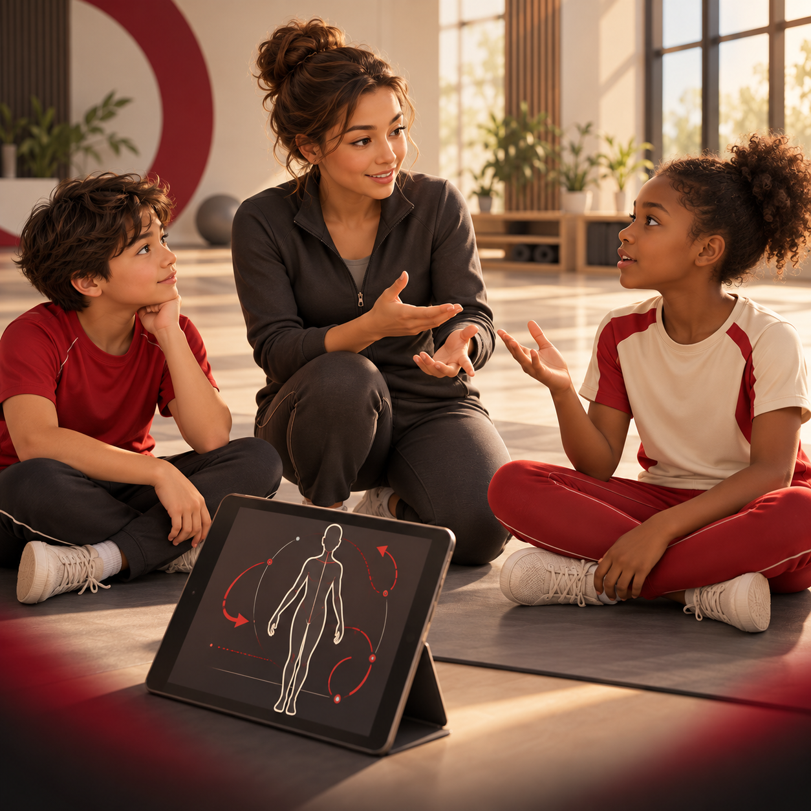
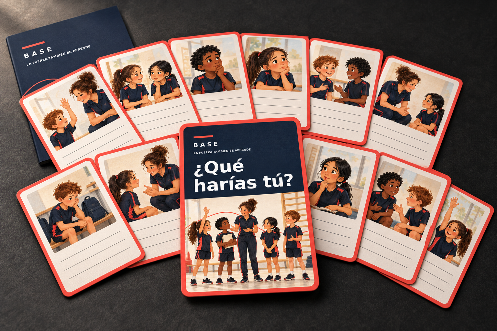
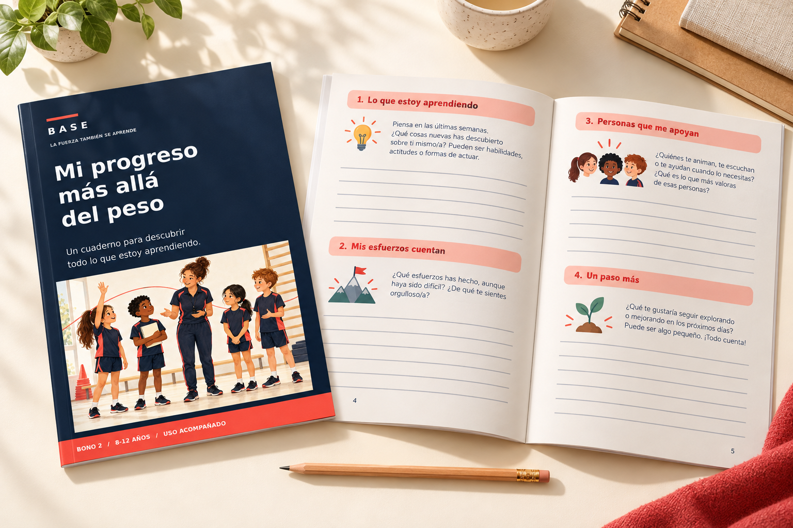

Mírenlo juntos
Presenta una idea con un minivídeo breve antes de la actividad.
Antes de continuar, descubre este complemento para tus clases.
80%EL COMPLEMENTO EDUCATIVO DE BASE
Convierte las ideas de BASE en explicaciones visuales y sencillas para tus alumnos, antes de llevarlas a la práctica contigo.
La fuerza también se aprende
Incluye dos bonos educativos para acompañar a tu grupo.
Una propuesta para sumar a tus clases. Tú sigues guiando.

BASE te ayuda a enseñar.
Esta serie está pensada para ayudarles a comprender.
No siempre basta con decir «hazlo así». Una explicación breve puede abrir la conversación sobre técnica, esfuerzo y aprendizaje, con palabras que tu grupo entienda.
DE LA PANTALLA A TU CLASE
Presenta una idea con un minivídeo breve antes de la actividad.
Usa una pregunta para escuchar qué entendieron y qué necesitan aclarar.
Relaciona la idea con tu clase. Tú decides cómo adaptar la actividad.
DOS BONOS PARA LLEVAR LA IDEA MÁS LEJOS
Los vídeos abren la conversación. Estos materiales te ayudan a continuarla con tu grupo.

12 situaciones para que tus alumnos expresen lo que piensan, elijan cómo responder y practiquen pedir ayuda.

Un espacio para reconocer nuevas ideas, preguntas y pequeños avances, sin compararse con el resto del grupo.
Bonos digitales en PDF para imprimir. Imágenes de presentación ilustrativas; no se envían materiales físicos.
TU COMPLEMENTO OPCIONAL
Explicaciones para ellos.
Un recurso más para ti.
Colección de vídeos en desarrollo. Los dos bonos PDF ya están preparados. Venta aún no habilitada.
Pago único · Complemento de BASE
Añade otra forma de explicar
lo que trabajas en clase.
No. BASE está dirigido al adulto que enseña. Esta serie se plantea como un recurso audiovisual para compartir con el alumnado, acompañado por su docente o entrenador.
No. Es material educativo general. No prescribe ejercicios, cargas o tratamientos, ni reemplaza la observación, la adaptación individual o la supervisión profesional.
Los dos bonos PDF están preparados. La colección de minivídeos continúa en desarrollo; la venta se habilitará cuando estén confirmados el contenido, el acceso y las condiciones de la oferta.